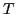
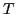

Particle simulation of wave particle interactions
Consider a longitudinal wave given by
The equations of motion of a test particle in the wave field are given by
 |
(2) |
and
where
is the  component of the
velocity of the particle.
component of the
velocity of the particle.
Normalize by the wavelength ,  by the wave period ,
by the wave period ,  by
the phase velocity , i.e.,
by
the phase velocity , i.e.,
where
,
,
. Using
the normalized quantities, Eqs. (2) and (3) are
written, respectively, as
and
The initial distribution function of particles
is taken to be
uniform in space and Maxwellian in velocity,
which satisfies the normalization condition
. In my particle simulation code (/home/yj/project_new/pic_code),
particles are initially loaded random in and Maxwellian in
. Then the motion equations of every particle are followed numerically to
obtain the location and velocity at later time. In the numerical code, when a
particle leaves from the region
, it is
shifted by one wavelength to return to this region. This shift does not
influence the force on the particle and it simulates the situation of infinite
length in direction, where when a particle leave the region
from the right boundary, a particle of the same
velocity will enter the region from the left boundary, and vice versa.
The velocity distribution at later time is obtained by counting the number of
particles in each velocity interval. Figure 1a compares the
velocity distribution function at
 and
,
which shows that the distribution is flatted in the resonant region
, which suggests that the total kinetic energy of particles may be
increased. Figure 2 plots the temporal evolution of the total
kinetic energy of the particles, which confirms that the kinetic energy is
increased by the wave. The conservation of energy tell us that the increased
kinetic energy of particles must be drawn from the wave, i.e., the wave
encounters damping.
and
,
which shows that the distribution is flatted in the resonant region
, which suggests that the total kinetic energy of particles may be
increased. Figure 2 plots the temporal evolution of the total
kinetic energy of the particles, which confirms that the kinetic energy is
increased by the wave. The conservation of energy tell us that the increased
kinetic energy of particles must be drawn from the wave, i.e., the wave
encounters damping.
Figure 1:
Comparison of the velocity distribution function
(spatially averaged) at various time, which shows that the distribution is
distorted in the resonant region (
 ). Other parameters:
). Other parameters:
 ,
,
 .
.
|
Figure:
Temporal evolution of the total kinetic energy of
the particles, where
. Other parameters:
,
.
|
Although the above simulation is performed by holding the wave amplitude
constant, it takes into account all the nonlinear physics of the particle
motion in the wave field. Therefore this is a nonlinear simulation.
Subsections
yj
2016-01-26